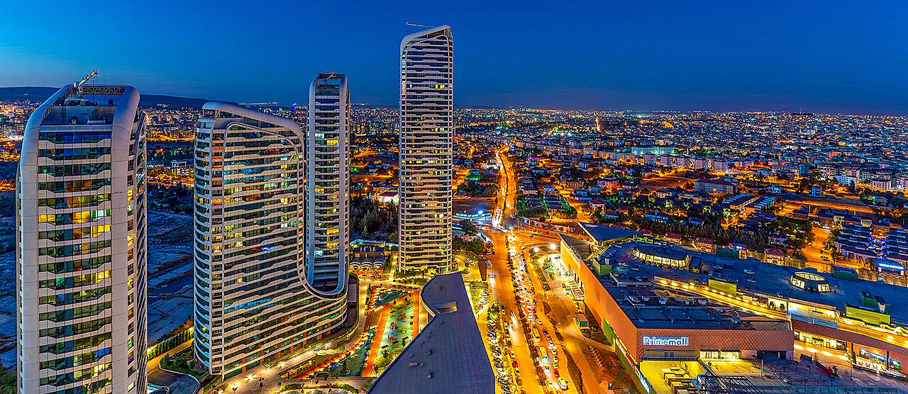
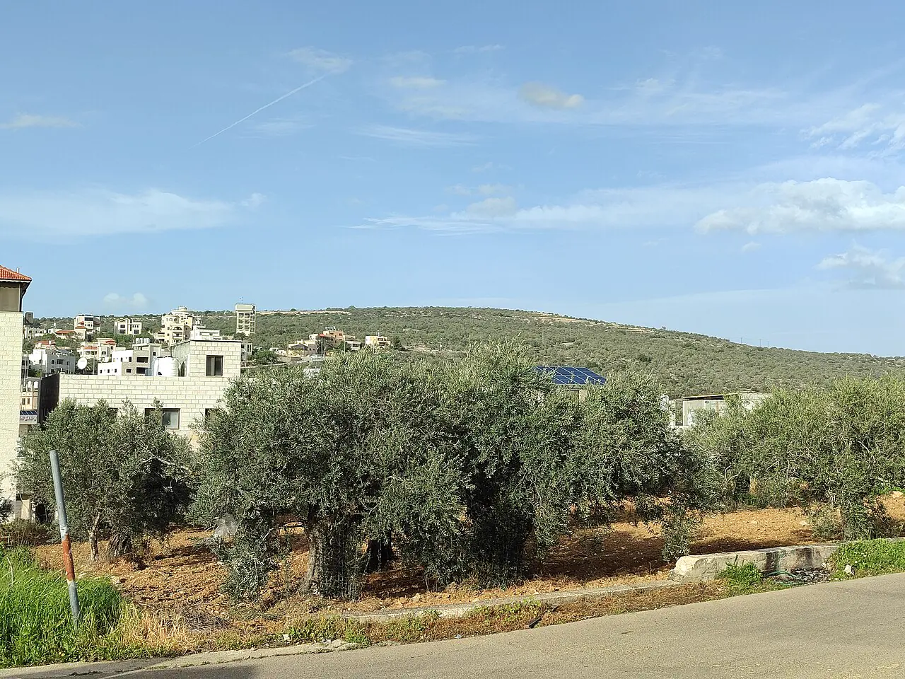
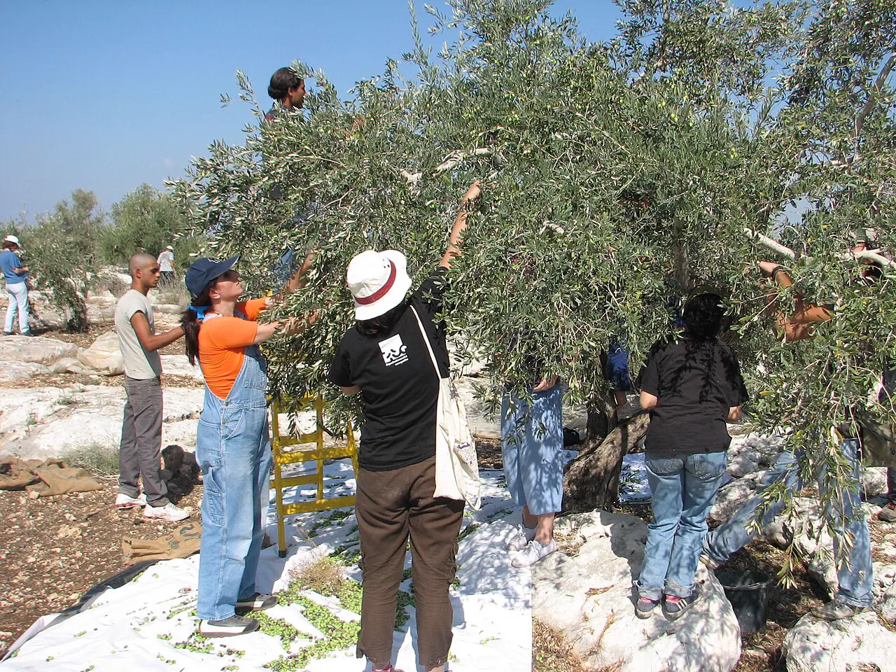
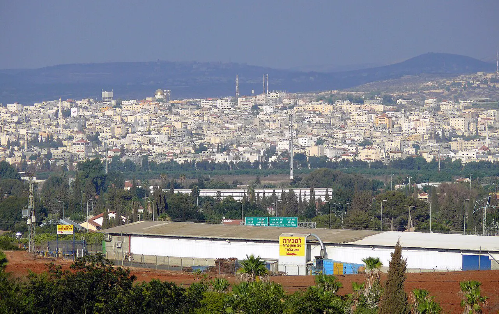
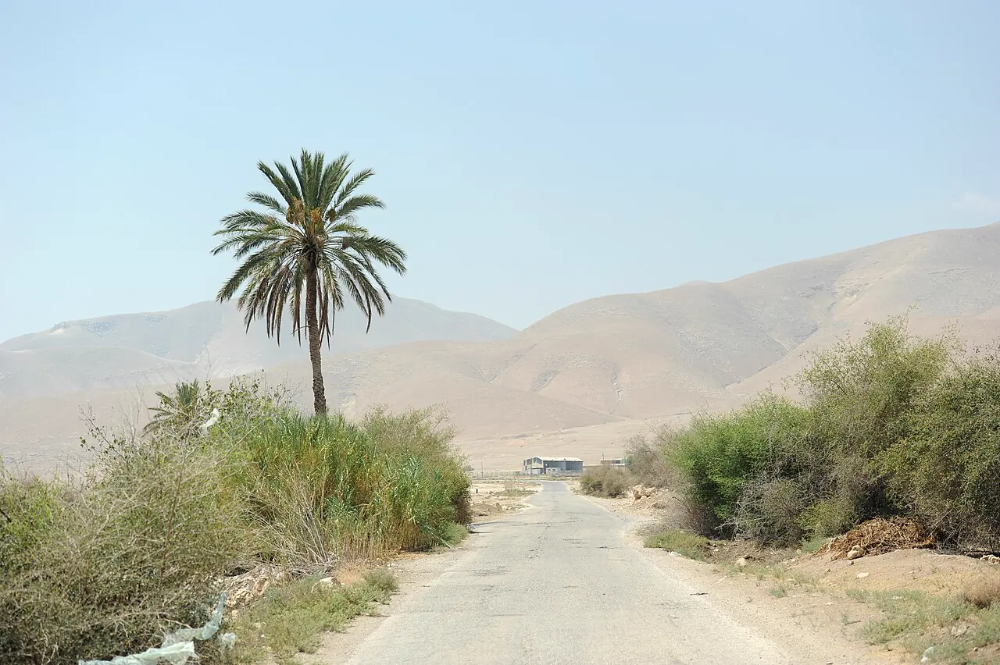
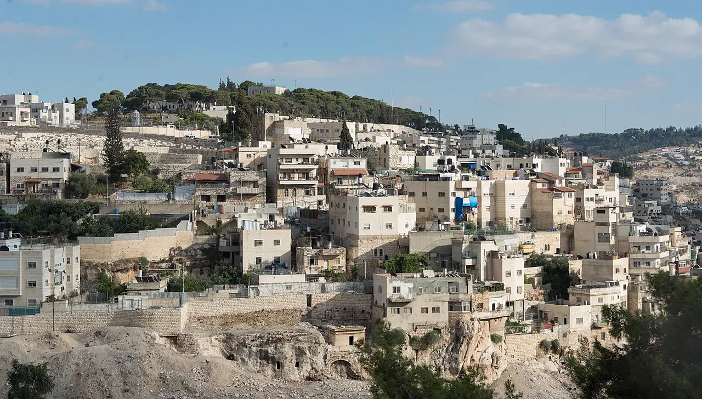
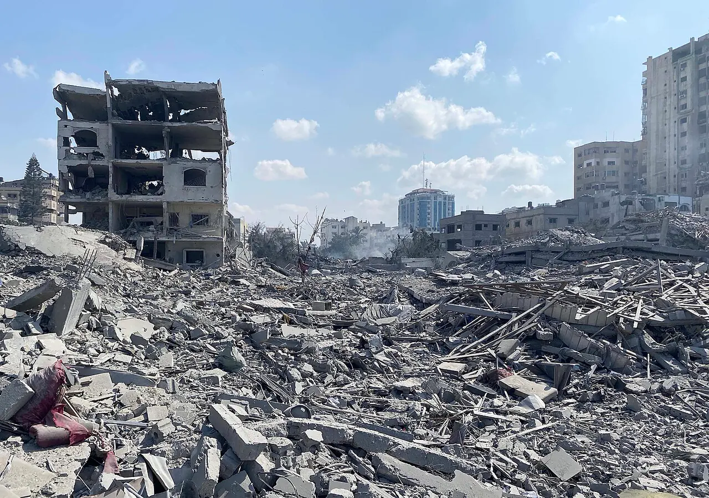
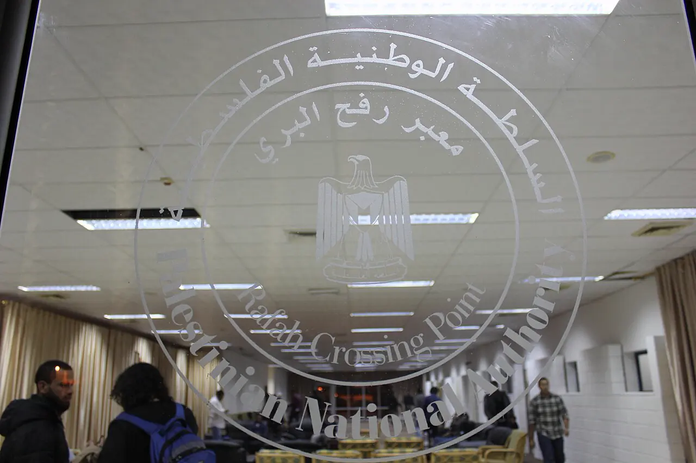

Zeytin hasadı
Zeytin hasadıSıcak Gündem


ArşivGaziantep ile Gazze arasında kardeş şehir protokolü imzalandı
#GAZIANTEP13 Ekim, 11.38

ArşivSelfit’te zeytin toplayan bir genç gözaltına alındı, Karavet Beni Hasan’da çiftçilere biber gazı sıkıldı
#SELFIT13.17
 Arşiv
Arşivİsrail güçleri Mesafir Yatta’da bir ev ile yedi kişinin yaşadığı bir barınağı yıktı
#MESAFIR YATTA10.50

ArşivTulkerem’in doğusundaki Beyt Lid’de yerleşimciler zeytin toplayan iki kadını sopayla yaraladı
#BEYT LID13 Ekim, 12.02
Batı Şeria
Tümü Arşiv
Arşivİsrail güçleri Tulkerem Kampı’ndan 47 yaşındaki bir kadını Cebbare kontrol noktasında gözaltına aldı
Filistinli Esirler Kulübü’nün Tulkerem şubesine göre İsrail güçleri, Tulkerem Kampı’nda yaşayan 47 yaşındaki bir kadını kentin güneyindeki Cebbare kontrol noktası yakınında gözaltına aldı.
#TULKEREM KAMPI13.53
 Arşiv
Arşivİsrail güçleri Selfit’in batısındaki Haris’te üç oto tamirhanesini yıktı
#HARIS13.52

Arşivİsrail güçleri Kalkilya’da bir çocuğu mermiyle yaralayıp gözaltına aldı
#KALKILYA12 Ekim, 21.34

ArşivYerleşimciler Tubas Ovası’nda çardak kurup İsrail bayrağı astı, İsrail güçleri demir kapı dikti
#TUBAS OVASI12 Ekim, 14.23
Batı Şeria’dan diğer haberler
- 14.18
- 11.00
- 10.08
- 13 Ekim, 23.38
- 13 Ekim, 12.10
- 13 Ekim, 11.49
- 13 Ekim, 08.12
- 12 Ekim, 13.45
Kudüs
Tümü
Arşivİsrail, Silvan’da bir baba ile oğluna ait 2 evi yıktı
Kudüs Valiliğine göre iş makineleriyle Silvan beldesinin Vadi Kaddum Mahallesi’ne giren İsrail güçleri, bir baba ile oğluna ait iki evi yıktı.
#SILVAN13 Ekim, 12.18
Gazze
Tümü
Arşivİsrail uçakları Gazze kentinin batısında bir daireyi vurdu: Bir kadın hayatını kaybetti
Yerel kaynaklara göre İsrail uçakları, Gazze kentinin batısındaki Rimal Mahallesi’nde Ebu Talal Kavşağı yakınındaki bir konut dairesini hedef aldı; saldırıda bir kadın hayatını kaybetti, çok sayıda kişi yaralandı.
#RIMAL MAHALLESI08.51

ArşivRefah’ın Mevasi bölgesinde İsrail İHA saldırısı: 2 ölü
#MEVASI12 Ekim, 07.52
Son haberler
- 12 Ekim, 19.00BM İnsan Hakları Ofisi: Gazze’de ateşkesten temmuz sonuna kadar 1.076 ölüm doğrulandı
BM İnsan Hakları Yüksek Komiserliği’nin işgal altındaki Filistin topraklarındaki ofisi, ateşkesin ilan edildiği Ekim 2025’ten Temmuz 2026 sonuna kadar Gazze’de 1.076 Filistinlinin öldürüldüğünü doğruladı; bunların 268’i çocuk, 126’sı kadın, 682’si erkek.
- 13 Ekim, 12.27Gazze kentinin Tuffah Mahallesi’nde sivil bir araca hava saldırısı: 1 ölü
Sağlık kaynaklarına göre İsrail’e ait bir insansız hava aracı, Gazze kentinin kuzeydoğusundaki Tuffah Mahallesi’nde Muşahara Caddesi’nde sivil bir aracı hedef aldı; saldırıda kimliği henüz belirlenemeyen bir kişi hayatını kaybetti, çok sayıda kişi yaralandı.
- 13 Ekim, 07.21Gazze’nin Zevayde beldesinde üç hafta önce yaralanan 4 yaşındaki çocuk hayatını kaybetti
Sağlık kaynaklarına göre Gazze Şeridi’nin orta kesimindeki Zevayde beldesine yaklaşık üç hafta önce düzenlenen İsrail saldırısında yaralanan 4 yaşındaki bir çocuk hayatını kaybetti.
- 12.06Gazze’de can kaybı 74.392’ye çıktı, ateşkesten bu yana 1.501 kişi hayatını kaybetti
Gazze’deki sağlık kaynaklarının açıkladığı verilere göre 7 Ekim 2023’ten bu yana hayatını kaybedenlerin sayısı 74.392’ye, yaralı sayısı 175.440’a yükseldi.
Esirler
Tümü Arşiv
ArşivEsir İşleri Kurumu: Damon Hapishanesi’ndeki iki Filistinli kadın uyuz hastalığıyla boğuşuyor
Esir İşleri Kurumu, Damon Hapishanesi’nde tutulan 20 ve 31 yaşlarındaki iki Filistinli kadın esirin uyuz (skabiyez) hastalığına yakalandığını, hijyen malzemesi eksikliği ve koğuşlardaki yüksek nem nedeniyle durumlarının ağırlaştığını açıkladı.
#DAMON HAPISHANESI12.36
Hapishanelerde bugün
- 9.400Filistinli İsrail hapishanelerinde14 Ekim
- 3.101idari tutuklu, yargılanmadan1 Ekim
- 350çocuk esir1 Ekim
- 91kadın esir1 Ekim
Esirlerden haberler
- 13 EkimEsirler Kulübü: Takasla serbest kalan yaklaşık 80 esir yeniden gözaltına alındı veya sorgulandı
Filistinli Esirler Kulübü, 13 Ekim 2025’teki esir takasının birinci yılında, takaslarla serbest kalanlardan yaklaşık 80’inin yeniden gözaltına alındığını ya da sorguya çağrıldığını açıkladı.
- 13 Ekim, 10.34İsrail mahkemesi İsaviyeli 15 yaşındaki çocuğa 6 ay hapis cezası verdi
Doğu Kudüs’ün İsaviye beldesinden 15 yaşındaki bir çocuğa İsrail mahkemesince 6 ay fiili hapis cezası verildi.
- 12.22Esirler Kulübü: İsrail hapishanelerinde yaklaşık 9.400 Filistinli tutuluyor
Filistinli Esirler Kulübü Başkanı Abdullah ez-Zagari, Filistin Sesi radyosuna yaptığı açıklamada İsrail hapishanelerindeki yaklaşık 9.400 Filistinlinin işkence, açlık ve tıbbi ihmalle karşı karşıya olduğunu, aile ziyaretlerinin ve Uluslararası Kızılhaç’ın erişiminin engellendiğini söyledi.